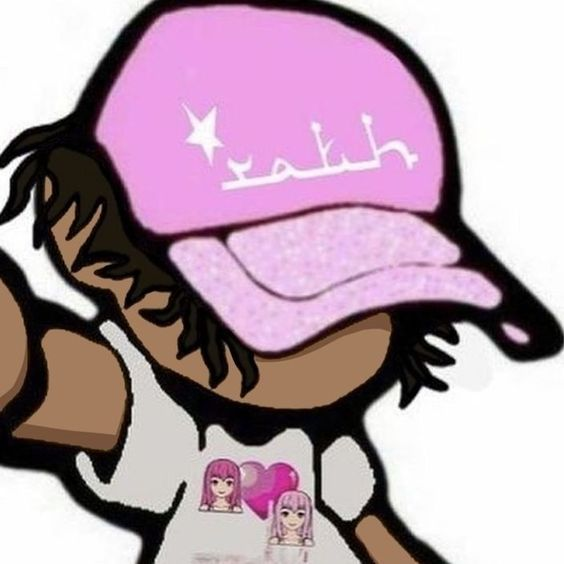
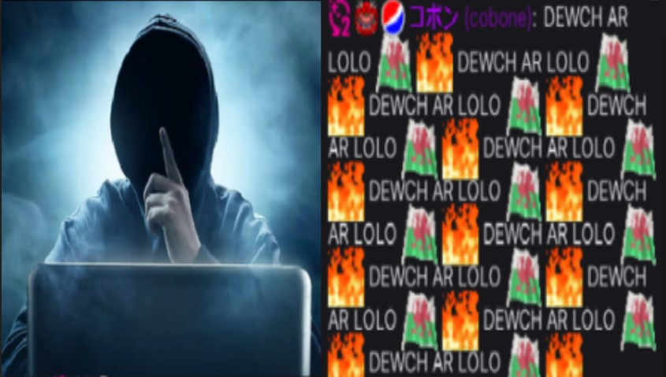

Solicitud de VIP
Sean bienvenidos a la solucitud de VIP de Cobone...
TWITTER / INSTAGRAM
Para una mejor experiencia escucha esto

Razones por las que me gustaria obtener vip
Si bien soy bastante nuevo dentro de esta comunidad, me considero con la capacidad de pooser mencionado rango, debido a que siento que le podria dar un gran uso, segun mi punto de vista, uno de los fuertes que poseo es el poder hacer copys rapidos, y bastantes buenos por cierto, con esto quiero dar a entender que gracias a el vip, lograria poder spamear sin un limite haciendo que el chat no muera, al igual que tambien me considero algo como le llaman los jovenes, muy basado TOOBASED, con esto mismo hago alusion a que gracias a el vip, podria largar factores sin limite.
Puntos a tener en cuenta
Un breve repaso por mis aptitudes mas destacadas, o puntos a tener en cosideración.
Con estos puntos quiero dar a entender, que son apartados los cuales considero importantes para obtener el vip.
tengo muchas contribuciones en reddit
En las siguentes imagenes, se pueden observar una pequeña parte de mis aportes en reddit, los cuales son previamente premeditados y analizados una y otra vez, para ver si dichos aportes son merecedores de un HAHAHA o de un Zzz (Click a cada imagen para verla mejor).
Con respecto a este apartado, me considero una persona la cual aporta muchisimo al reddit, aunque la demas gente no suba cosas, siempre yo voy a subir algo, hasta me atreveria a decir que soy una de las personas que mas aporto, sino el que mas lo hizo.
Un poco sobre mi
Si bien, como ya mencione antes soy bastante nuevo dentro de la "comunidad" pretendo quedarme un rato muy largo, ademas que priorizo el contenido y siempre me gusta mandar links con videos interesantes, los cuales podria interesarte o ponerte al tanto con las novedades de los youtubers/artistas el cual sea de relevancia para el stream, ademas de esto soy un gran viewer de trovo, dejo la view cuando no estoy y normalmente hablo por el chat. Como se puede observar en la imagen aunque sea nuevo yo te sigo hace mas de 1 año y medio, siendo este el followage mucho mayor que el de la mayoria, con esto no quiero pretender estar en un puesto mas arriba que otro sino solo mencionarlo y que sepas que yo perri malvado te segui cuando no confiaba nadie 😈.
Como conclusion final.
Como para ir cerrando esta maravillosa presentacion, una vez leida y analizada con criterio, ya obviando el que se usar el BTTV Y FZZ y conozco muchos emotes de memoria, ademas siempre me rio con OMEGALUL cosa que casi nadie lo hace y me pone triste, creo que podria venir muy bien el vip con mi persona. Durante la presentacion se fueron destacando los puntos mas fuertes y el porque quisiera el vip, un vip sin un buen portador del mismo es como un usuario normal, y yo quisiera cambiar eso, desde ya muchas gracias por haber leido y visualizado la presentacion, un gran abrazo para el chat TOOBASED.


{kind=link}
{kind=link}
{kind=link}
{kind=link}
{kind=link}
{kind=link}
{kind=link}
Final de la presentacion
Muchas gracias por leer y ver todo, como para terminar pone esto.